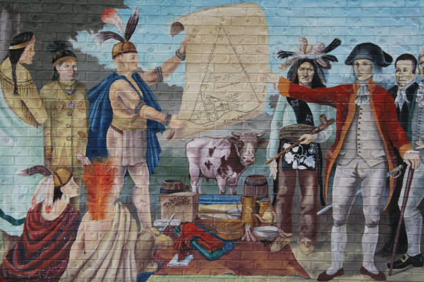
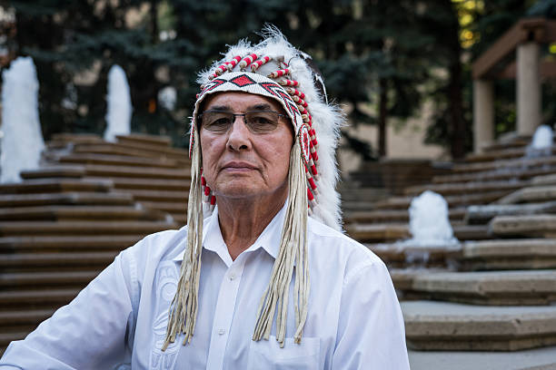
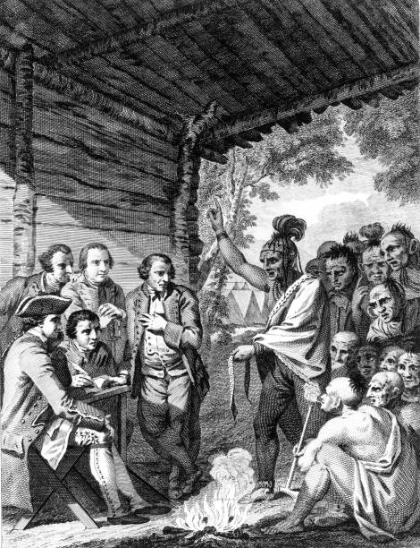

Canadian treaties are formal agreements between the Crown (the Canadian government) and Indigenous peoples, primarily signed between the 19th and early 20th centuries. These treaties were meant to establish peaceful coexistence, regulate land usage, and address governance.In exchange for land, Indigenous groups were promised compensation, education, healthcare, and reserved land. However, many of these promises were left unfulfilled, leading to a legacy of mistrust and hardship for Indigenous communities.
Click Here for More Info Treaty 1 (1871) was negotiated between seven First Nations—Brokenhead Ojibway Nation, Sagkeeng First Nation, Long Plain First Nation, Peguis First Nation, Roseau River Anishinaabe First Nation, Sandy Bay Ojibway First Nation, and Swan Lake First Nation—and the Crown (Canadian government). The treaty established shared rights and responsibilities across what is now southern Manitoba, impacting both Indigenous signatoriesand Canadian municipalities.
Click Here for More Info Key Canadian Communities Sharing Treaty Benefits & Obligations. Major cities and towns include Winnipeg, Brandon, Portage la Prairie, Selkirk, Steinbach, Lundar, Grand Beach, Emerson, and Winkler, among others. These communities exist within Treaty 1 territory and inherit its framework of mutual obligations.
Click Here for More InfoThe Crown promised First Nations certain things in exchange for land: 160 acres per family of five, or a proportional amount for smaller or larger families. They also agreed to build a school on each reserve, pay $15 per family of five, and reserve specific land for their exclusive use. However, many of these promises were not fully kept, leading to ongoing calls for justice and reconciliation.
Click Here for More Info Treaty Number One, signed on August 3, 1871, between the Canadian government and the Anishinabe people of Lower Manitoba, was the first of Canada's numbered treaties. It established a framework for a mutually beneficial relationship, allowing the Anishinabe to retain control over their traditional lands and waters in exchange for ceding land to the government. The treaty promised various benefits, including financial compensation, education, healthcare, and the right to self-government, ensuring that the Anishinabe could continue their cultural practices on designated lands.